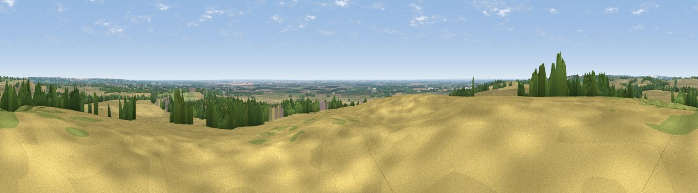
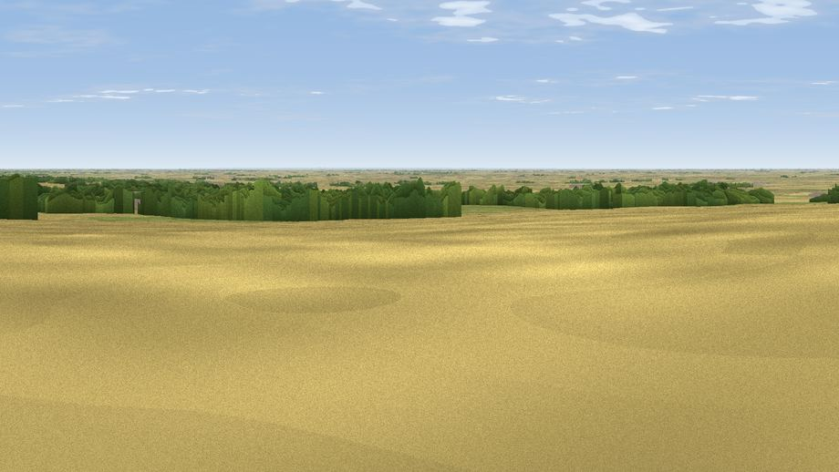
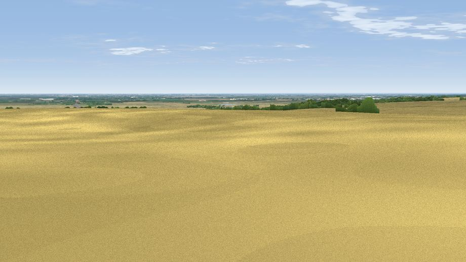

Viewpoint near East Keal
#8184 in England · the best view in its area · near East KealWhere it is
The exact computed spot (TF 37425 64200). Green wedges show where the rendered camera views below look. Click the marker for map links.
The view, rendered

A 360° render of this exact spot computed from the terrain model, tree cover and land cover — summer colours, afternoon light, calibrated against photographs of famous viewpoints. Real trees, hedges and buildings will differ in detail.
Through the camera


Rendered views along the best directions of this panorama.
The panorama
Grey silhouette: terrain skyline in each direction (720 bearings, Earth curvature and refraction included). Dashed green: skyline with trees (+15 m) and buildings (+8 m) as obstacles. Blue strip: how far the ground is visible on each bearing.
Where the view opens
Wedge length = distance to the farthest visible ground on that bearing (vegetation-aware). Rings at 10, 25 and 50 km.
What fills the view
63% cropland · 24% grassland · 11% woodland · 1% built-up ·
Angular shares of the visible panorama (visual magnitude), not map area. Landscape diversity 0.42 (0–1 Shannon).
Key numbers
More beautiful places nearby
The staircase of upgrades: each row has a higher view potential than everything closer. Driving times are estimates from straight-line distance, calibrated against real road routing — check an actual route before setting out.
| Place | Direction | Drive | Score |
|---|---|---|---|
| Viewpoint near Claxby | NW · 41 km | ~60 min | 71.5 |
| Broombriggs Hill | WSW · 99 km | ~124 min | 74.4 |
| Viewpoint near Woodhouse Eaves | WSW · 99 km | ~124 min | 77.7 |
| Viewpoint near Speeton | N · 113 km | ~137 min | 80.0 |
| Olivers Mount | NNW · 127 km | ~151 min | 80.3 |
| Viewpoint near Ravenscar | NNW · 142 km | ~165 min | 82.7 |
| Viewpoint near Ravenscar | NNW · 143 km | ~166 min | 87.3 |
| Viewpoint near Ravenscar | NNW · 144 km | ~167 min | 90.0 |
53.15720, 0.05383 · source: screening · position refined by local search. Computed location — check access rights before visiting.